*Please note, the number of breweries present in each state is based on the breweries listed in the Breweries.csv
# Read Breweries csv
breweries = read.csv('Data/breweries.csv', header = TRUE)
# Change Brew_ID to brewery_id in Breweries
colnames(breweries)[1] <- "Brewery_id"
# Breweries in each state
breweries %>%
count(State) %>%
arrange(desc(n))## State n
## 1 CO 47
## 2 CA 39
## 3 MI 32
## 4 OR 29
## 5 TX 28
## 6 PA 25
## 7 MA 23
## 8 WA 23
## 9 IN 22
## 10 WI 20
## 11 NC 19
## 12 IL 18
## 13 NY 16
## 14 VA 16
## 15 FL 15
## 16 OH 15
## 17 MN 12
## 18 AZ 11
## 19 VT 10
## 20 ME 9
## 21 MO 9
## 22 MT 9
## 23 CT 8
## 24 AK 7
## 25 GA 7
## 26 MD 7
## 27 OK 6
## 28 IA 5
## 29 ID 5
## 30 LA 5
## 31 NE 5
## 32 RI 5
## 33 HI 4
## 34 KY 4
## 35 NM 4
## 36 SC 4
## 37 UT 4
## 38 WY 4
## 39 AL 3
## 40 KS 3
## 41 NH 3
## 42 NJ 3
## 43 TN 3
## 44 AR 2
## 45 DE 2
## 46 MS 2
## 47 NV 2
## 48 DC 1
## 49 ND 1
## 50 SD 1
## 51 WV 1# bar chart
breweries$State = as.factor(breweries$State)
breweries %>%
mutate(State = fct_reorder(State, State, 'length', .desc = TRUE)) %>%
ggplot(aes(x = State)) + geom_bar(fill = 'red', color = 'black') + theme_economist_white() +
theme(legend.position = 'none') + ylab('Count of Breweries') + ggtitle('Total Breweries per State') +
theme(axis.text.x = element_text(angle = 90, vjust = 0.5, hjust = 1))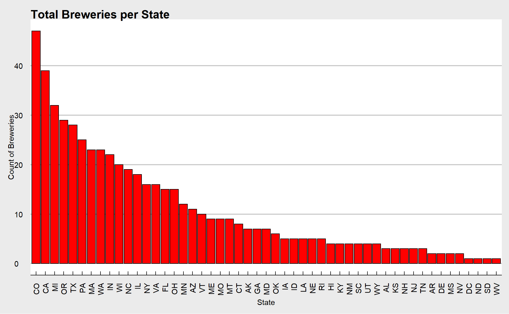
# map
breweries$State = trimws(breweries$State)
lookup = data.frame(abb = state.abb, State = state.name) #makes a data frame with State name and abbreviation.
colnames(breweries)[4] = "abb" # Change Column Name
breweries = merge(breweries,lookup,'abb') # make one dataset with state names and abb
breweriesMapData = count(breweries,State) #count up the occurance of each state.
colnames(breweriesMapData)[2] = "Breweries" #change "n" to "Breweries"
breweriesMapData$region <- tolower(breweriesMapData$State)
breweriesMapData2 = breweriesMapData[-1] #drop capitalized column
states <- map_data("state")
map.df <- merge(states,breweriesMapData, by="region", all.x=T) #merge map data to df
map.df <- map.df[order(map.df$order),]
ggplot(map.df, aes(x=long,y=lat,group=group))+
geom_polygon(aes(fill=Breweries))+
geom_path()+
scale_fill_gradientn(colours=rev(heat.colors(10)),na.value="grey90")+ggtitle("Breweries by State") +
coord_map()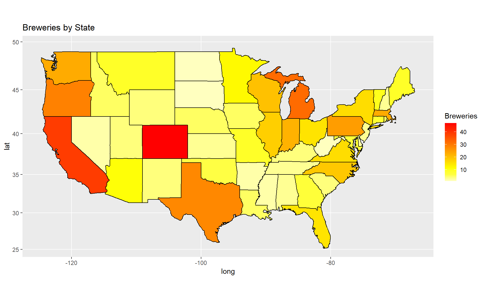
# Read Beers csv
beers = read.csv('Data/beers.csv', header = TRUE)
# Merge Beers and Breweries Data
final = left_join(beers, breweries, by = "Brewery_id")
# Formatting after merge
final$State = trimws(final$State) # Remove Spaces from State
final$State = as.factor(final$State) # Make State factor
final = rename(final, Beer_Name = Name.x) # Rename Name columns
final = rename(final, Brewery_Name = Name.y)
# Print First 6 observations
head(final, n = 6)## Beer_Name Beer_ID ABV IBU Brewery_id Style Ounces abb Brewery_Name City State
## 1 Pub Beer 1436 0.050 NA 409 American Pale Lager 12 OR 10 Barrel Brewing Company Bend Oregon
## 2 Devil's Cup 2265 0.066 NA 178 American Pale Ale (APA) 12 IN 18th Street Brewery Gary Indiana
## 3 Rise of the Phoenix 2264 0.071 NA 178 American IPA 12 IN 18th Street Brewery Gary Indiana
## 4 Sinister 2263 0.090 NA 178 American Double / Imperial IPA 12 IN 18th Street Brewery Gary Indiana
## 5 Sex and Candy 2262 0.075 NA 178 American IPA 12 IN 18th Street Brewery Gary Indiana
## 6 Black Exodus 2261 0.077 NA 178 Oatmeal Stout 12 IN 18th Street Brewery Gary Indiana# Print Last 6 observations
tail(final, n = 6)## Beer_Name Beer_ID ABV IBU Brewery_id Style Ounces abb Brewery_Name City State
## 2405 Rocky Mountain Oyster Stout 1035 0.075 NA 425 American Stout 12 CO Wynkoop Brewing Company Denver Colorado
## 2406 Belgorado 928 0.067 45 425 Belgian IPA 12 CO Wynkoop Brewing Company Denver Colorado
## 2407 Rail Yard Ale 807 0.052 NA 425 American Amber / Red Ale 12 CO Wynkoop Brewing Company Denver Colorado
## 2408 B3K Black Lager 620 0.055 NA 425 Schwarzbier 12 CO Wynkoop Brewing Company Denver Colorado
## 2409 Silverback Pale Ale 145 0.055 40 425 American Pale Ale (APA) 12 CO Wynkoop Brewing Company Denver Colorado
## 2410 Rail Yard Ale (2009) 84 0.052 NA 425 American Amber / Red Ale 12 CO Wynkoop Brewing Company Denver Colorado# Sum of missing data values in each column
colSums(is.na(final))## Beer_Name Beer_ID ABV IBU Brewery_id Style Ounces abb Brewery_Name City State
## 0 0 62 1005 0 0 0 8 8 8 8# Return missing IBU values by State
final %>%
filter(is.na(IBU)) %>%
count(State) %>%
arrange(desc(n))## State n
## 1 Michigan 124
## 2 Colorado 119
## 3 Pennsylvania 53
## 4 Illinois 52
## 5 California 48
## 6 Indiana 48
## 7 Wisconsin 45
## 8 Texas 41
## 9 Oregon 38
## 10 Massachusetts 31
## 11 North Carolina 29
## 12 New York 28
## 13 Washington 25
## 14 Arizona 23
## 15 Connecticut 21
## 16 Florida 21
## 17 Maine 20
## 18 Montana 17
## 19 Ohio 17
## 20 Nebraska 16
## 21 Utah 15
## 22 Idaho 13
## 23 Missouri 13
## 24 Maryland 11
## 25 Vermont 10
## 26 Georgia 9
## 27 Hawaii 9
## 28 Louisiana 9
## 29 Minnesota 9
## 30 South Carolina 9
## 31 Alaska 8
## 32 New Mexico 8
## 33 Oklahoma 8
## 34 Kentucky 7
## 35 Rhode Island 7
## 36 South Dakota 7
## 37 New Hampshire 6
## 38 Iowa 5
## 39 Virginia 5
## 40 Arkansas 4
## 41 Kansas 4
## 42 <NA> 4
## 43 Nevada 3
## 44 Wyoming 3
## 45 Alabama 1
## 46 Delaware 1
## 47 Tennessee 1# Remove missing IBU values
final = na.omit(final, cols=c("IBU"))
# Sum of missing data values in each column after removing missing IBU
colSums(is.na(final))## Beer_Name Beer_ID ABV IBU Brewery_id Style Ounces abb Brewery_Name City State
## 0 0 0 0 0 0 0 0 0 0 0# Median ABV by State
# Display Median Alcohol Content by State
final$State <- fct_reorder(final$State, final$ABV, 'median', .desc = TRUE)
final %>%
group_by(State) %>%
summarize(Median_ABV = median(ABV)) %>%
ggplot(aes(x = State, y = Median_ABV)) + theme_economist_white() +
geom_bar(stat = "identity", color = "black", aes(fill = Median_ABV)) +
scale_fill_gradient2(low='white', mid='snow', high='red') +
ggtitle("Median Alcohol Content by State") +
ylab("Alcohol Content") +
theme(axis.text.x = element_text(angle = 90, vjust = 0.5, hjust = 1)) +
theme(legend.position = 'none')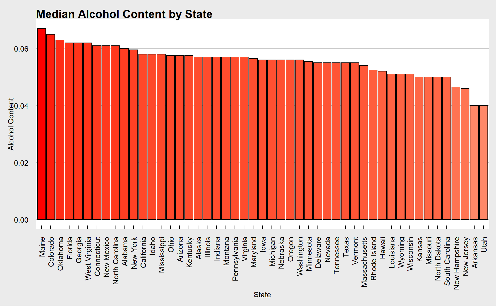
# Median IBU by State
# Display Median IBU by State
final$State <- fct_reorder(final$State, final$IBU, 'median', .desc = TRUE)
final %>%
group_by(State) %>%
summarize(Median_IBU = median(IBU)) %>%
ggplot(aes(x = State, y = Median_IBU)) + theme_economist_white() +
geom_bar(stat = "identity", color = "black", aes(fill = Median_IBU)) +
scale_fill_gradient2(low='white', mid='snow', high='red') +
ggtitle("Median IBU by State") +
ylab("IBU") +
theme(axis.text.x = element_text(angle = 90, vjust = 0.5, hjust = 1)) +
theme(legend.position = 'none')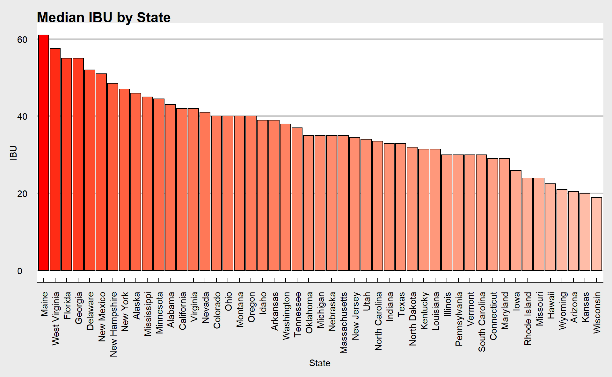
# Kentucky has the highest ABV at 0.125
max(final[,3]) ## [1] 0.125final %>%
select(Brewery_Name,Beer_Name,State, ABV) %>%
filter(final$ABV == "0.125")## Brewery_Name Beer_Name State ABV
## 1 Against the Grain Brewery London Balling Kentucky 0.125# Oregon has the most bitter IBU at 138
max(final[,4])## [1] 138final %>%
select(Brewery_Name,Beer_Name,State, IBU) %>%
filter(final$IBU == "138")## Brewery_Name Beer_Name State IBU
## 1 Astoria Brewing Company Bitter Bitch Imperial IPA Oregon 138# Summary stats ABV
summary(final$ABV)## Min. 1st Qu. Median Mean 3rd Qu. Max.
## 0.0270 0.0500 0.0570 0.0599 0.0680 0.1250# Distribution of ABV
final %>%
ggplot(aes(x = ABV)) +
geom_histogram(bins = 100, fill = 'yellow', color = 'black') +
ggtitle("ABV Distribution") +
theme_economist_white()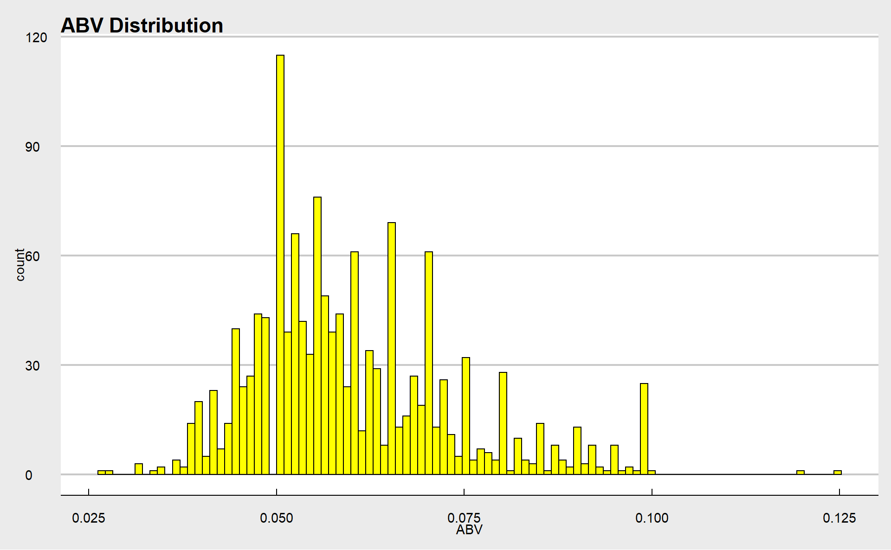
# Relationship between bitterness and alcohol content
ggplot(data = final) +
geom_point(aes(x = ABV, y = IBU, color = IBU), position = "jitter") +
geom_smooth(aes(x = ABV, y = IBU, color = IBU)) +
ggtitle("Relationship Between Bitterness and Alcohol Content") + theme_economist_white()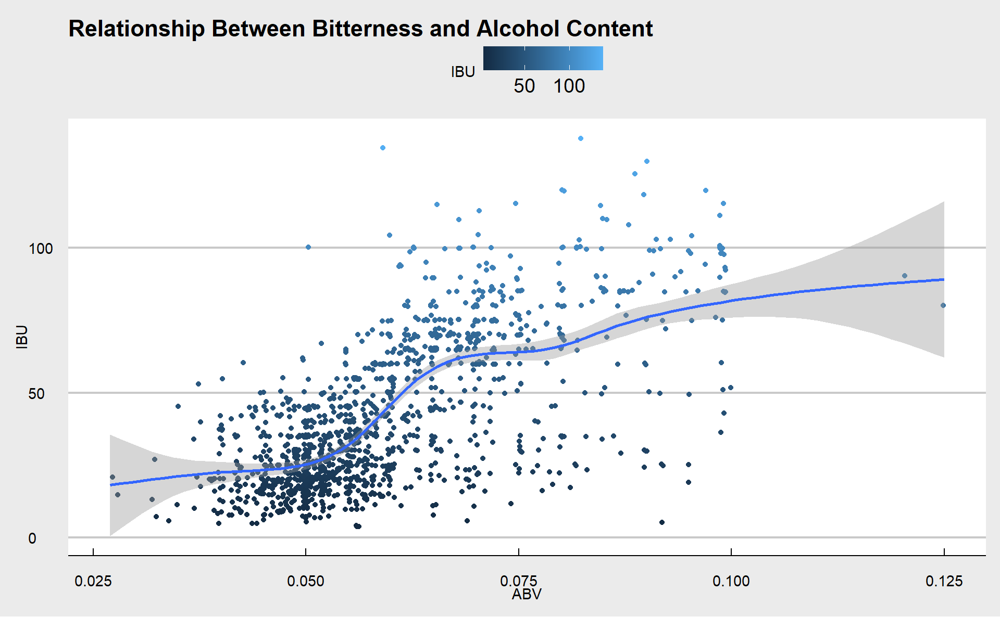
The following code explores some basic KNN models with various values of K, and then iterates 500 times through 90 values of K to find the optimal value to use to maximize accuracy. Finally there is a scatterplot for a visual check on the relationship.
# KNN differences of IBU and ABV between IPAs and Ales
# Create new dataframe and filter for IPAs and Ales
IPA_Ale = final %>% filter(str_detect(Style, "IPA$") | str_detect(Style, "Ale$") | str_detect(Style, "(APA)"))
# Change Style to Ale or IPA
IPA_Ale$Style = gsub(".*Ale.*", "Ale", IPA_Ale$Style, ignore.case = FALSE)
IPA_Ale$Style = gsub(".*IPA.*", "IPA", IPA_Ale$Style, ignore.case = FALSE)
# Change Style to factor
IPA_Ale$Style = as.factor(IPA_Ale$Style)
# KNN of unknown beer with ABV of .05 and IBU of 28
df = data.frame(ABV = .050 , IBU = 28 )
knn(IPA_Ale[,c(3,4)], df, IPA_Ale$Style, k = 5, prob = TRUE)## [1] Ale
## attr(,"prob")
## [1] 1
## Levels: Ale IPAknn(IPA_Ale[,c(3,4)], df, IPA_Ale$Style, k = 15, prob = TRUE)## [1] Ale
## attr(,"prob")
## [1] 1
## Levels: Ale IPAknn(IPA_Ale[,c(3,4)], df, IPA_Ale$Style, k = 30, prob = TRUE)## [1] Ale
## attr(,"prob")
## [1] 0.9636364
## Levels: Ale IPA# KNN of unknown beer with ABV of .083 and IBU of 70
df1 = data.frame(ABV = .083 , IBU = 70 )
knn(IPA_Ale[,c(3,4)], df1, IPA_Ale$Style, k = 5, prob = TRUE)## [1] IPA
## attr(,"prob")
## [1] 0.875
## Levels: Ale IPAknn(IPA_Ale[,c(3,4)], df1, IPA_Ale$Style, k = 15, prob = TRUE)## [1] IPA
## attr(,"prob")
## [1] 0.8333333
## Levels: Ale IPAknn(IPA_Ale[,c(3,4)], df1, IPA_Ale$Style, k = 30, prob = TRUE)## [1] IPA
## attr(,"prob")
## [1] 0.875
## Levels: Ale IPA# Create training and test sets
trainInd = sample(seq(1,921,1), .7*921)
train = IPA_Ale[trainInd,]
test = IPA_Ale[-trainInd,]
# Testing with k of 5 and k of 15
classifications = knn(train[,c(3,4)],test[,c(3,4)],train$Style, prob = TRUE, k = 5)
confusionMatrix(table(classifications,test$Style))## Confusion Matrix and Statistics
##
##
## classifications Ale IPA
## Ale 151 15
## IPA 17 94
##
## Accuracy : 0.8845
## 95% CI : (0.8408, 0.9196)
## No Information Rate : 0.6065
## P-Value [Acc > NIR] : <2e-16
##
## Kappa : 0.7588
##
## Mcnemar's Test P-Value : 0.8597
##
## Sensitivity : 0.8988
## Specificity : 0.8624
## Pos Pred Value : 0.9096
## Neg Pred Value : 0.8468
## Prevalence : 0.6065
## Detection Rate : 0.5451
## Detection Prevalence : 0.5993
## Balanced Accuracy : 0.8806
##
## 'Positive' Class : Ale
## classifications = knn(train[,c(3,4)],test[,c(3,4)],train$Style, prob = TRUE, k = 15)
confusionMatrix(table(classifications,test$Style))## Confusion Matrix and Statistics
##
##
## classifications Ale IPA
## Ale 153 15
## IPA 15 94
##
## Accuracy : 0.8917
## 95% CI : (0.849, 0.9257)
## No Information Rate : 0.6065
## P-Value [Acc > NIR] : <2e-16
##
## Kappa : 0.7731
##
## Mcnemar's Test P-Value : 1
##
## Sensitivity : 0.9107
## Specificity : 0.8624
## Pos Pred Value : 0.9107
## Neg Pred Value : 0.8624
## Prevalence : 0.6065
## Detection Rate : 0.5523
## Detection Prevalence : 0.6065
## Balanced Accuracy : 0.8865
##
## 'Positive' Class : Ale
## # testing 90 values of K to find one with highest Accuracy.
set.seed(42)
iterations = 50
numks = 90
splitPerc = .70
masterAcc = matrix(nrow = iterations, ncol = numks)
for(j in 1:iterations)
{
trainIndices = sample(1:dim(IPA_Ale)[1],round(splitPerc * dim(IPA_Ale)[1]))
train = IPA_Ale[trainIndices,]
test = IPA_Ale[-trainIndices,]
for(i in 1:numks)
{
classifications = knn(train[,c(3,4)],test[,c(3,4)],train$Style, prob = TRUE, k = i)
table(classifications,test$Style)
CM = confusionMatrix(table(classifications,test$Style))
masterAcc[j,i] = CM$overall[1]
}
}
MeanAcc = colMeans(masterAcc)
#plot(seq(1,numks,1),MeanAcc, type = "l")
which.max(MeanAcc)## [1] 5max(MeanAcc)## [1] 0.8569565# Scatterplot displaying differences between Ales and IPAs
# Ales tend to have less alcohol and less bitter compared to IPAs
ggplot(data = IPA_Ale) +
geom_point(mapping = aes(x = ABV, y = IBU, color = Style)) +
geom_smooth(aes(x = ABV, y = IBU, color = Style)) +
facet_wrap(~ Style) +
ggtitle("Difference Between Ales and IPA's") + theme_economist_white()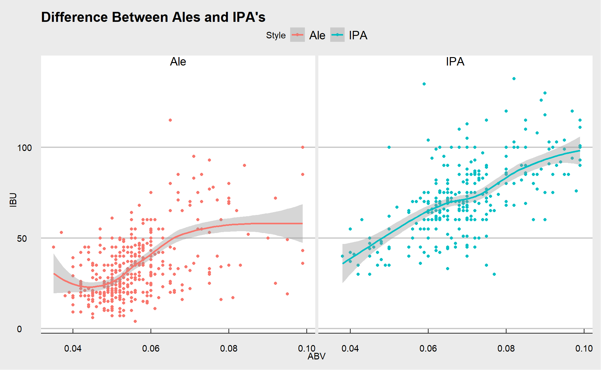
The following code explores the relationships between Beer Consumption per Capita and the number of local beers offered in a State using heatmaps and scatterplots to check for a linear relationship. It then proceeds to try an ANOVA test, however the normality assumptions are violated. consumption data from: https://pubs.niaaa.nih.gov/publications/surveillance115/tab2_18.htm
# 9. Find another useful inference that Budweiser may be able to find value in.
consumption <- read.csv('Data/consumption.csv', header = TRUE)
consumption <- rename(consumption, region = ï..Region)
consumption$Beer.Volume <- parse_number(consumption$Beer.Volume)
# mapping
final$State = trimws(final$State)
lookup = data.frame(abb = state.abb, State = state.name) #makes a data frame with State name and abbreviation.
colnames(final)[11] = "State" # Change Column Name
beerMapData = count(final,State) #count up the occurance of each state.
colnames(beerMapData)[2] = "Beers" #change "n" to "Beers"
beerMapData$region <- tolower(beerMapData$State)
beerMapData = beerMapData[-1] #drop capitalized column
states <- map_data("state")
map.df <- merge(states,beerMapData, by="region", all.x=T) #merge map data to df
map.df <- merge(map.df,consumption, by="region") #merge consumption data to df
map.df <- map.df[order(map.df$order),]
ggplot(map.df, aes(x=long,y=lat,group=group))+
geom_polygon(aes(fill=Beers))+
geom_path()+
scale_fill_gradientn(colours=rev(heat.colors(10)),na.value="grey90")+ggtitle("Beers by State") +
coord_map()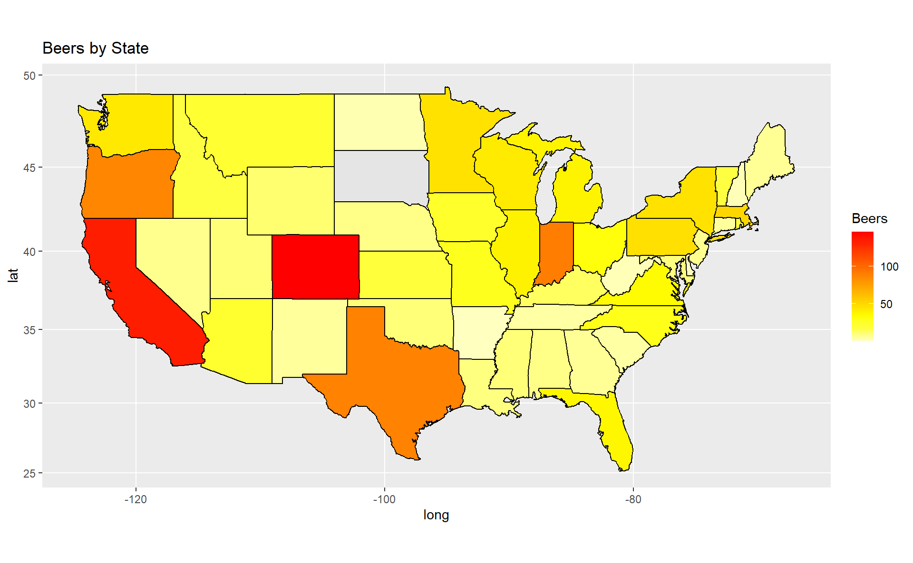
ggplot(map.df, aes(x=long,y=lat,group=group))+
geom_polygon(aes(fill=Beer.Per.Capita))+
geom_path()+
scale_fill_gradientn(colours=rev(heat.colors(10)),na.value="grey90")+ggtitle("Beer Consumption per Capita") +
coord_map()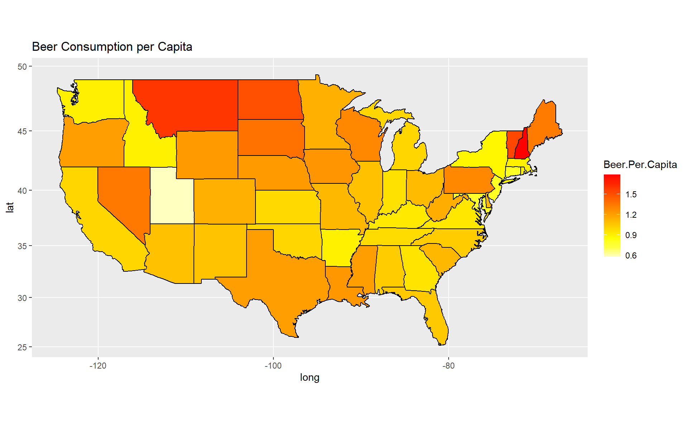
ggplot(map.df, aes(x=long,y=lat,group=group))+
geom_polygon(aes(fill=All.Per.Capita))+
geom_path()+
scale_fill_gradientn(colours=rev(heat.colors(10)),na.value="grey90")+ggtitle("Alchohol Consumption per Capita") +
coord_map()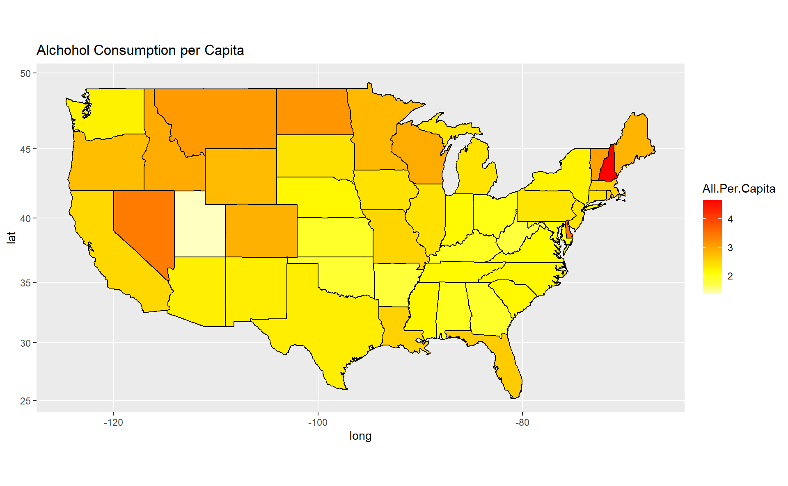
#scatterplot - no linear relationship relevant to be able to proceed with any sort of linear regression testing
map.df %>% group_by(region) %>% ggplot(aes(x = Beer.Per.Capita, y = Beers)) +
geom_point() + geom_smooth() + ggtitle('Beer Consumption Per Capita vs Unique Beer Offerings') +
xlab('Beer Consumption per Capita') + ylab('Unique Beer Offerings')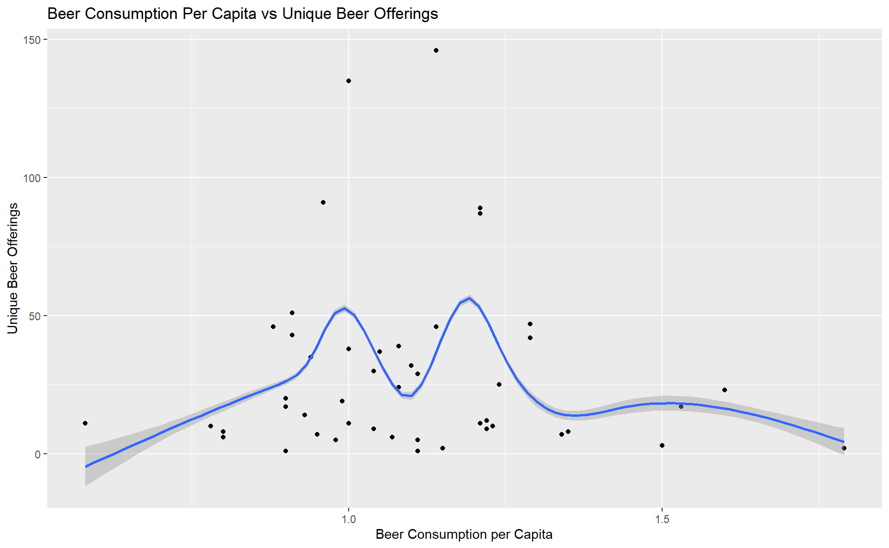
#Explore ANOVA testing to test for difference in mean number of beers offered based on Beer Consumption per Capita
df <- map.df %>% select(region,Beers,Beer.Volume,Beer.Per.Capita)
df2 <- df[!duplicated(df$region),]
#cut based on quartile
df2$BeerCapita_Factor = cut(df2$Beer.Per.Capita, breaks = c(0,.947,1.08,1.22,2), labels = c("Low","Medium","High","Very High"))
na.omit(df2) %>% group_by(BeerCapita_Factor) %>% skim(Beers)| Name | Piped data |
| Number of rows | 47 |
| Number of columns | 5 |
| _______________________ | |
| Column type frequency: | |
| numeric | 1 |
| ________________________ | |
| Group variables | BeerCapita_Factor |
Variable type: numeric
| skim_variable | BeerCapita_Factor | n_missing | complete_rate | mean | sd | p0 | p25 | p50 | p75 | p100 | hist |
|---|---|---|---|---|---|---|---|---|---|---|---|
| Beers | Low | 0 | 1 | 21.83 | 17.26 | 1 | 9.50 | 15.5 | 37.00 | 51 | ▇▅▁▂▅ |
| Beers | Medium | 0 | 1 | 34.69 | 38.02 | 5 | 9.00 | 24.0 | 38.00 | 135 | ▇▃▁▁▁ |
| Beers | High | 0 | 1 | 39.08 | 45.56 | 1 | 8.00 | 20.5 | 56.25 | 146 | ▇▂▁▁▁ |
| Beers | Very High | 0 | 1 | 18.40 | 15.83 | 2 | 7.25 | 13.5 | 24.50 | 47 | ▇▂▃▁▃ |
#aov to test if there is any difference in mean total beers by quartile of beer per capita consumption, however needed assumptions are not met (Normality violated with small number of n)
fit2 <- aov(data = df2, Beers ~ BeerCapita_Factor)
summary(fit2)## Df Sum Sq Mean Sq F value Pr(>F)
## BeerCapita_Factor 3 3381 1127 1.06 0.376
## Residuals 43 45710 1063
## 1 observation deleted due to missingness#ggally summary visualizations
df2 %>% select (Beer.Per.Capita, Beers, BeerCapita_Factor) %>% ggpairs(aes(color = BeerCapita_Factor))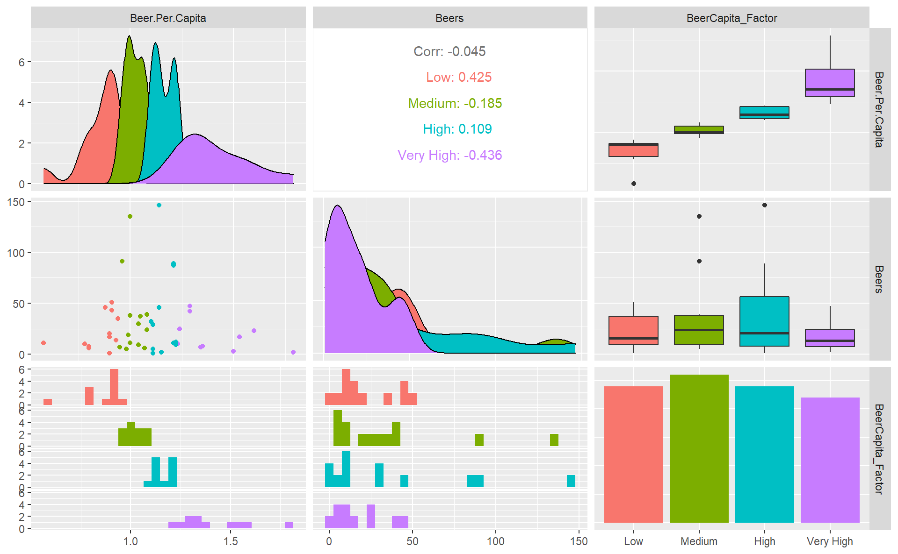